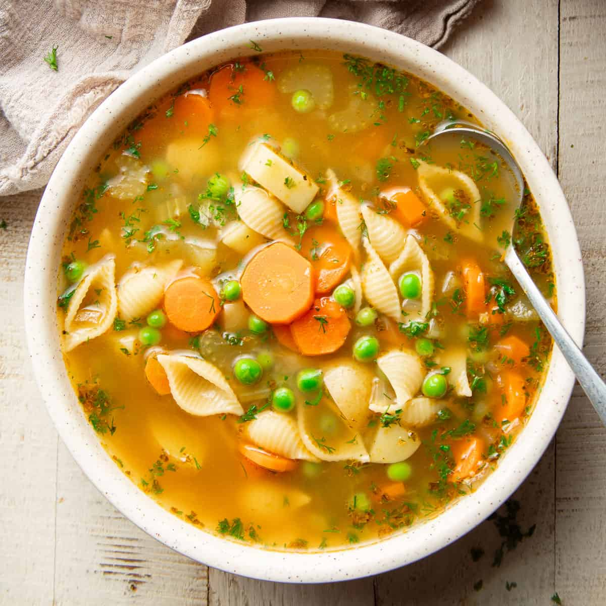

SOUP

This Italian wedding soup is a combination of homemade meatballs with sliced escarole, carrots, and orzo pasta in a lovely flavorsome broth. Serve hot, garnished with fresh parsley and extra Parmesan cheese.
- ½ pound extra-lean ground beef
- 1 large egg, lightly beaten
- 2 tablespoons dry bread crumbs
- 1 tablespoon grated Parmesan cheese
- ½ teaspoon dried basil
- ½ teaspoon dried basil
- 5 ¾ cups chicken broth
- 2 cups thinly sliced escarole
- 1 cup uncooked orzo pasta
- ⅓ cup finely chopped carrot
- Combine ground beef, egg, bread crumbs, Parmesan cheese, basil, and onion powder in a bowl.
- Shape beef mixture into 3/4-inch balls and place on a parchment-lined tray.
- Heat broth in a large pot over medium-high heat until boiling. Stir in escarole, orzo, carrot, and meatballs and return to boil. Reduce heat to medium and cook at slow boil, stirring frequently to prevent sticking, until pasta is tender yet firm to the bite, about 10 minutes.
- Serve hot and enjoy!